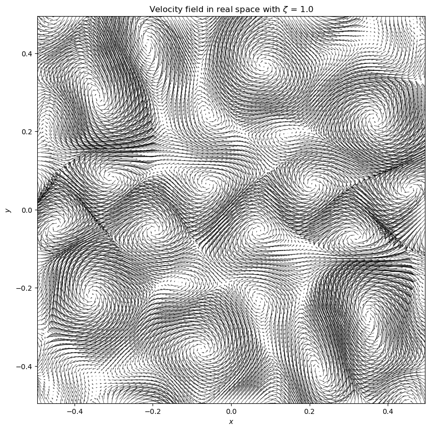

I am a MPhil student at The Chinese University of Hong Kong. Under the supervision of Prof. Li Hua-bai, I am now working on the starformation. I optained my Bachelor's Degree in Physics at The Hong Kong University of Science and Technology together with "Astronomy and Cosmology" and Information Technology Minor. I am enthusiastic about numerical fluid dynamics and data analysis.
I am currently working on molecular cloud simulation using Scorpio - a 3D MHD simulation suite that developed by Prof. Wang, Hsing-Hsu. Bimodal cloud-field alignment was observed (Li, 2013) which indicate that molecular clouds in the Gould Belt are either perpandicular or parallel to the mean magnetic field direction. (The project details are under constructed.)
The figure on the lefts shows are 2d velocity field with certain input power spectrum.

To be constructed.